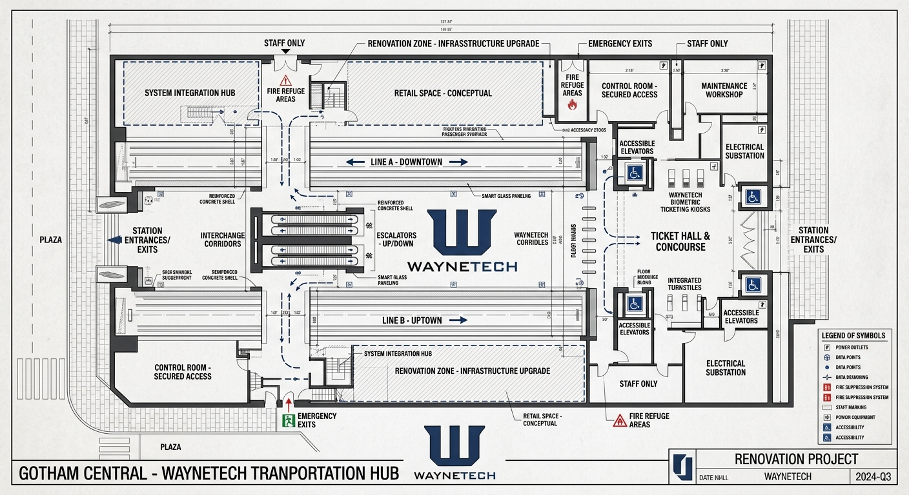
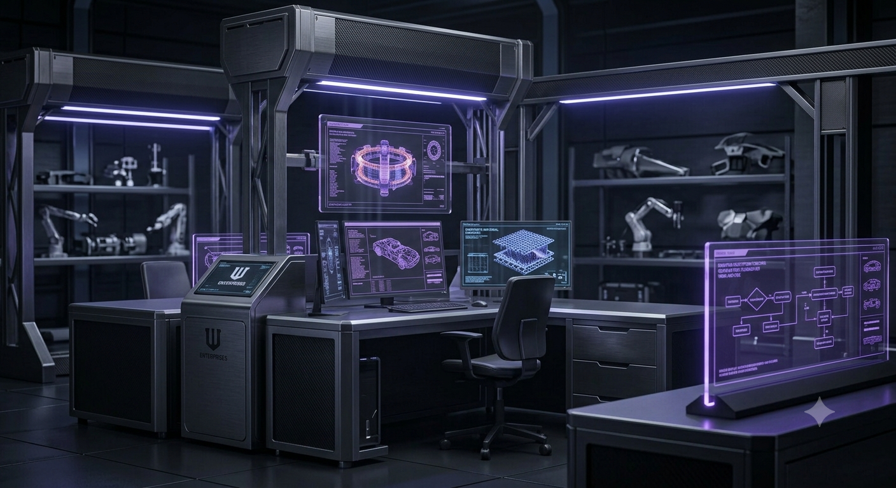
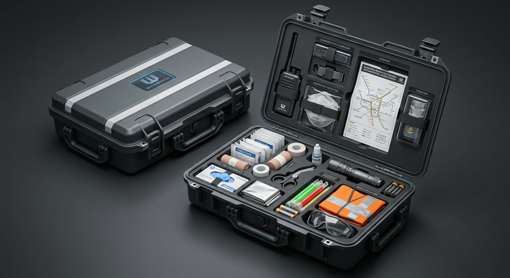
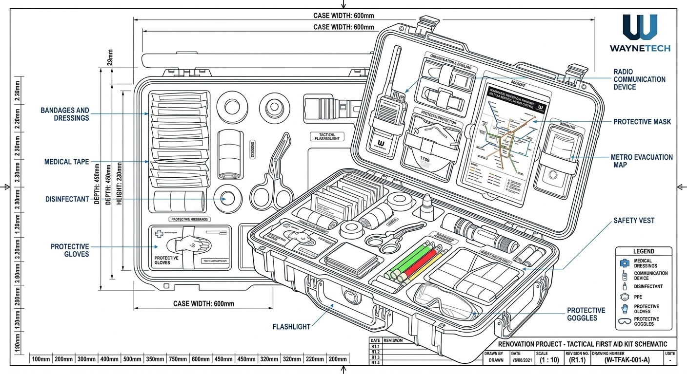
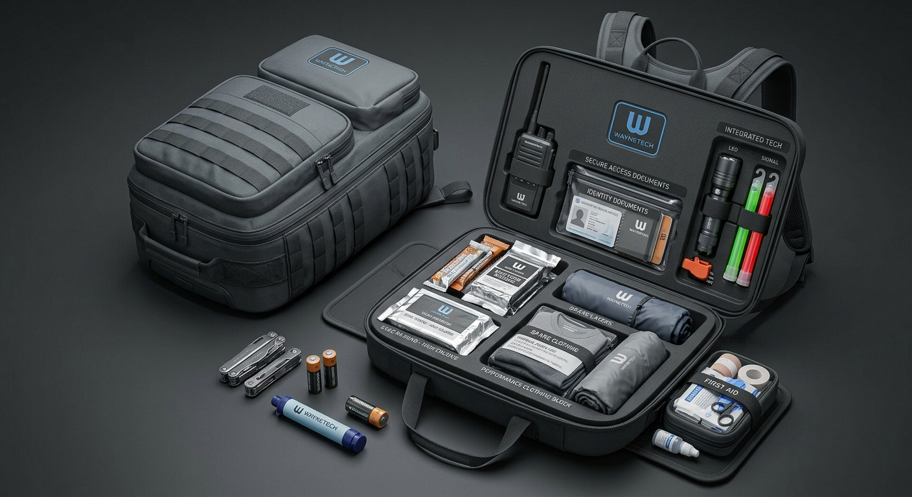
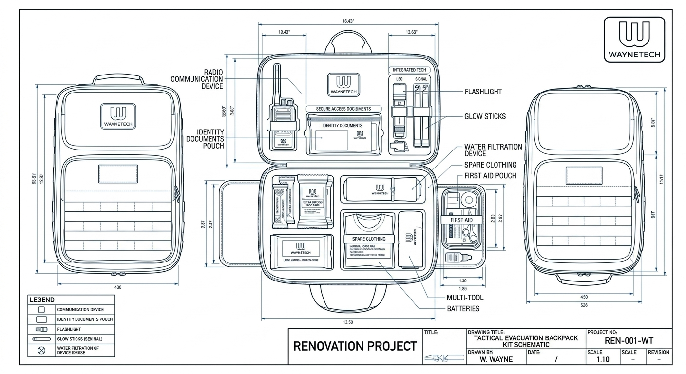

Projet métro
WayneTech poursuit l'évolution du réseau métropolitain imaginé par Thomas Wayne, avec pour objectif d'améliorer la mobilité, la sécurité et l'accessibilité pour tous.

Recherches, innovations et technologies avancées au service de la mobilité et de la sécurité.
Développée au début des années 2000, WayneTech est l'une des principales branches de Wayne Enterprises. Sous la supervision de Lucius Fox, elle concentre ses activités sur la recherche, le développement et la création de nouvelles technologies.
De la mobilité à la santé, en passant par la sécurité, WayneTech place l'innovation au service de tous.
Développement de technologies aériennes pour la reconnaissance, l'intervention et le transport sécurisé.
Solutions de mobilité et de transport adaptées aux besoins civils et professionnels.
Recherche dans les domaines de la santé, des matériaux et des équipements destinés à améliorer la protection et le quotidien.
Technologies de communication, de protection et de sécurisation des systèmes et des infrastructures.
Le laboratoire de recherche et développement de WayneTech poursuit chaque jour ses recherches afin de faire progresser la science et la technologie. Notre objectif est de développer des solutions capables d'améliorer la sécurité de chacun, qu'il soit civil ou engagé sur le terrain.

WayneTech poursuit l'évolution du réseau métropolitain imaginé par Thomas Wayne, avec pour objectif d'améliorer la mobilité, la sécurité et l'accessibilité pour tous.

WayneTech développe de nouvelles solutions pour rendre les soins et les secours plus accessibles, tout en améliorant la préparation face aux situations d'urgence.


WayneTech développe des équipements destinés à aider chacun à se préparer et à faire face aux situations d'urgence, où qu'elles surviennent.

